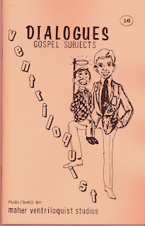

We have our winners!
12/24/2009
{kind=link}

In 1974 we (Maher Studios) published a series of 36 dialogue books with dialogues authored by nearly 100 different members of the NAAV (North American Association of Ventriloquists). Three of the books contain my own personal writings. This book #16 of Gospel Dialogues one that I authored and contains five full length dialogue programs: I'm Stuck, Christmas List, It Doesn't Pay To Be Stubborn, Dummy Conducts Children's Lesson, and Appearances Deceitful.
While this book series has been out of print for many years, I had four signed copies of book #16 which were awarded one copy each to the first four (4) people who emailed me after reading this post. Winners: Ron Havens (KY), Jim Burke MS), Joshua Minetree (MD), and Maj. Wes Green (IL).
But this give-away continues with unusual and heartwarming twists - read on.
Abhijeet Deshpande (India) was just out of the winner's group by coming in #5. Along with Abhijeet's entry was a request "If I win this item, I would like to gift it to my guide in ventfigure making from USA, Mr. Ken Souza. He helps me a lot in figuremaking, he provided me many books, tons of information and materials. So I want to thank him by giving this item as a gift in this Christmas season."
I would gladly have awarded a 5th copy of the book to fulfill Abhijeet's request, but unfortunately, four copies was all I had. However, almost at the same time I received the following email from winner Jim Burke: "I have checked and (found I) already have a copy of this book. Could you send this one to the person who came in number 5 with my desires that this person have a VERY MERRY CHRISTMAS!"
Amazing coincidence? Maybe. I prefer to think of it as the Spirit of Christmas actively at work with this double "pay it forward". But wait, that's not the end of the story!
Learning of the above incident, Wes Green sent me the following:
"Clinton, I was blessed to see that Abhijeet Deshpande had indeed been accommodated for this gift. I was especially interested in this copy as it was signed by the author. I feel that something has greater value when it is personalized. It says the you were known by the author personally. I know that experience in my Bible's author. I celebrate His Birth and Life thru my own.
"I would like to share this book with a beginner who is still learning about ventriloquism and Clinton Detweiler. I'm putting a package together of other treasures from my wife's collection to pass on to my friend and am thrilled to add this to it. I look forward to meeting this author and creator one day. If not before Heaven, then I'll look for you in Glory where we'll both be known by the Author and Creator of our Faith. Blessings, Wes!"
"Clinton, I was blessed to see that Abhijeet Deshpande had indeed been accommodated for this gift. I was especially interested in this copy as it was signed by the author. I feel that something has greater value when it is personalized. It says the you were known by the author personally. I know that experience in my Bible's author. I celebrate His Birth and Life thru my own.
"I would like to share this book with a beginner who is still learning about ventriloquism and Clinton Detweiler. I'm putting a package together of other treasures from my wife's collection to pass on to my friend and am thrilled to add this to it. I look forward to meeting this author and creator one day. If not before Heaven, then I'll look for you in Glory where we'll both be known by the Author and Creator of our Faith. Blessings, Wes!"
There will be an extra bright smile on my face when I put these gifts into the mail, Saturday morning. The gifts that keep on giving! And I was blessed to share the experience and now share the story with you - what an honor! Merry Christmas, everyone! Clinton